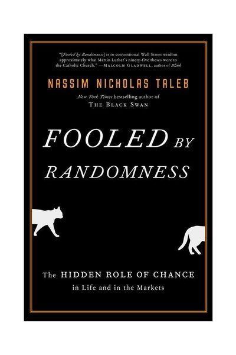

Library › Money & Finance
Fooled by Randomness — Summary & Key Lessons

The hidden role of chance in life and markets — why the successful are often just lucky, and how not to be fooled.
📖 OPEN THE FULL INTERACTIVE BREAKDOWN →🌐 Read it in Hindi, Hinglish, Gujarati, Tamil & 22 more languages — free, with audio.
💡 The Big Idea
We are hardwired to see skill in what is mostly noise. Taleb's opening thought experiment: put enough monkeys at typewriters and one types the Iliad — would you bet the next book on that monkey? Yet that's exactly what markets, business media, and career advice do daily: sample enough risk-takers and SOMEBODY becomes a billionaire by pure chance; we then interview the winner, extract 'lessons,' and write bestsellers about their morning routine. The cure is thinking in ALTERNATIVE HISTORIES: judge every decision by all the ways it could have turned out, not the one way it did. A great decision can have a bad outcome; a terrible decision can pay off wildly — and rewarding outcomes over process guarantees you'll eventually promote the lucky reckless over the wise unlucky. Survivorship bias hides the graveyard, skewness hides the rare catastrophe inside 'steady' returns, and randomness eventually collects from everyone who mistook a bull market for a mirror.
🧠 The 4 Key Lessons
Lesson 1: Alternative Histories: Judge the Dice, Not the Roll
Part I: Solon's Warning
Every outcome you observe is ONE draw from a distribution of things that could have happened. The Russian-roulette player who wins $10M is rich in this history — and dead in one of the six. Taleb's rule: the quality of a decision equals the quality of ALL its possible outcomes weighted by their odds, not the single outcome you happened to observe. This inverts how the world assigns credit: the executive whose reckless bet paid off gets promoted over the one whose prudent call cost a quarter's profit, even though rerunning history a hundred times bankrupts the first company ninety times. If you evaluate yourself and others only on results, you are systematically training recklessness and punishing wisdom — and compounding that error with every promotion cycle.
📖 Example: Two neighbors: a janitor who won $10M in the lottery, and a dentist who earned $5M over a careful career. Same neighborhood, similar houses — utterly different qualities of wealth. Rerun the janitor's life 1,000 times and he's poor in 999 of them; rerun the… Read the full example →
⚡ Do this: For your next big decision, write down the 5 most plausible outcomes and rough odds BEFORE acting — then grade yourself later on whether the process was sound given what you knew, not on which outcome the universe happened to serve.
Lesson 2: Survivorship Bias: The Graveyard Doesn't Give Interviews
Part II: Monkeys on Typewriters
Every success formula you've ever read was reverse-engineered from survivors — the failures who did the exact same things aren't around to be interviewed. Start with 10,000 fund managers flipping coins: after 5 years, ~312 have won five years straight by pure chance; those 312 get magazine profiles about their 'discipline' and 'unique process.' The visible sample is ALWAYS biased toward winners, which inflates your estimate of how well strategies work and how much skill matters. This is why 'dropouts become billionaires' feels true (you can name three) while the millions of broke dropouts are statistically invisible, and why every 'traits of successful people' article is astrology with a business vocabulary: the dead had the same traits.
📖 Example: The classic WWII lesson Taleb echoes: analysts studied returning bombers to decide where to add armor — and marked the bullet holes. Statistician Abraham Wald reversed it: armor where the returning planes have NO holes, because planes hit THERE never made it… Read the full example →
⚡ Do this: Next time you study any success (a person, company, or strategy), force yourself to name three failures who did the same things — search for them deliberately. If you can't find the graveyard data, treat the 'lesson' as unproven, not as a blueprint.
Lesson 3: Skewness: The Steady Strategy That Ends in Ruin
Part II: Randomness, Nonsense, and the Scientific Intellectual
Frequency of success is meaningless without magnitude — what matters is the expectation, and above all whether the rare event bankrupts you. Strategies that win small amounts very often while losing catastrophically very rarely LOOK brilliant for years: the trader is profitable 11 months out of 12, the insurance-like bet pays 'steady income,' the record shows nothing but green — right up until the twelfth month deletes a decade. Taleb famously did the reverse: he was willing to lose small amounts almost every day for years to win colossally when the rare event hit, a strategy that looks stupid on every normal day and genius on the only days that matter. Ask of every strategy: not 'how often does it win?' but 'what happens on its worst day, and can I survive that day?'
📖 Example: Taleb at a meeting is asked if he thinks the market will go up. 'Probably yes — 70% chance,' he says — while holding a massive SHORT position. The room is confused; he isn't: the market was likely to drift up slightly (frequent, small) but if it fell, it… Read the full example →
⚡ Do this: Audit your biggest financial position and your career: write down the realistic worst-case event for each and what it costs you. If any single plausible event wipes you out, restructure NOW — no frequency of small wins justifies exposure to ruin.
Lesson 4: The News Is Noise: Why Checking More Makes You Know Less
Part I: A Mildly Intellectual Look at Randomness
Over a short interval, price movements — and life results — are almost pure noise; the signal only emerges over long horizons. Taleb's math on a strategy with a solid 15% annual edge: observed yearly, it shows profit 93% of the time; observed every minute, barely 50.02% — indistinguishable from a coin flip. But human emotions don't scale: each observed loss hurts about twice as much as a win pleases, so the minute-checker experiences a mountain of net pain while the yearly-checker experiences calm success — ON THE SAME STRATEGY. This is the case against financial news, portfolio-checking, and dashboard addiction: high-frequency observation of a noisy process doesn't inform you; it injures you, and injured people make panicked decisions that convert paper noise into real losses.
📖 Example: Taleb's fictional dentist invests well and retires to monitor his portfolio in real time: checking by the minute, he suffers roughly 60,000 emotional hits a year, net negative feeling despite excellent returns — and eventually starts 'doing something' about… Read the full example →
⚡ Do this: Set observation frequencies to match decision frequencies: if you rebalance yearly, check your portfolio quarterly at most. Delete one real-time dashboard (market app, analytics, follower counts) this week and replace it with a scheduled monthly review.
✅ 5-Step Action Plan
- Grade decisions by process and alternative histories, not by single outcomes — keep a decision journal with pre-stated odds.
- Hunt the graveyard: before copying any success, find three failures who did the same thing.
- Kill all exposure to ruin: no position, habit, or lifestyle where one plausible event ends the game.
- Match your checking frequency to your decision frequency — starve yourself of high-frequency noise.
- Reserve judgment on hot streaks (yours included): assume variance until years of evidence say otherwise.
💬 Best Quotes from Fooled by Randomness
- “Mild success can be explainable by skills and labor. Wild success is attributable to variance.”
- “It does not matter how frequently something succeeds if failure is too costly to bear.”
- “Lucky fools do not bear the slightest suspicion that they may be lucky fools.”
Interactive version: mark lessons as read, listen in your language, share quote cards.